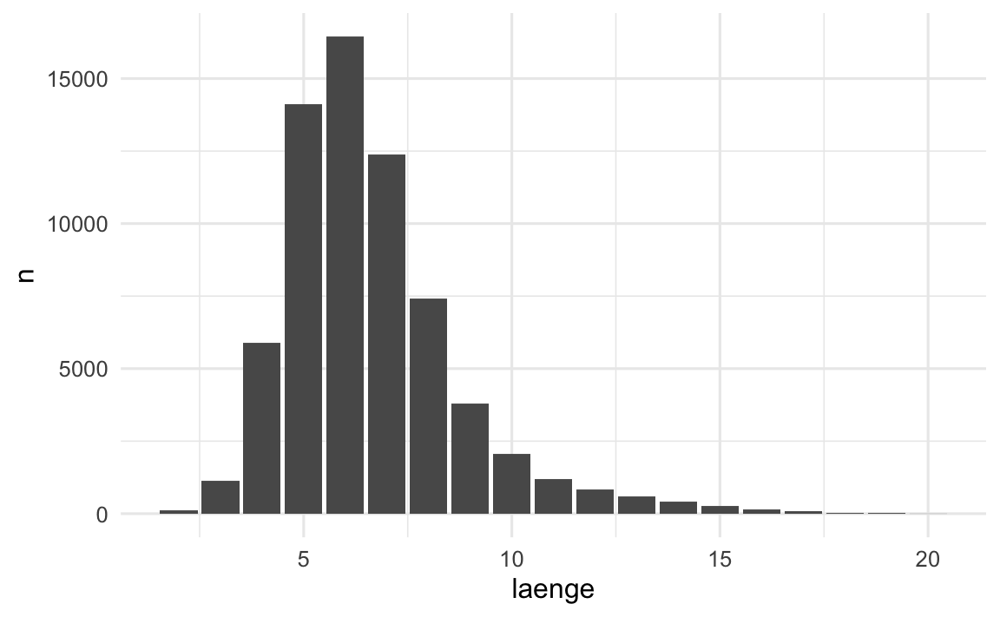
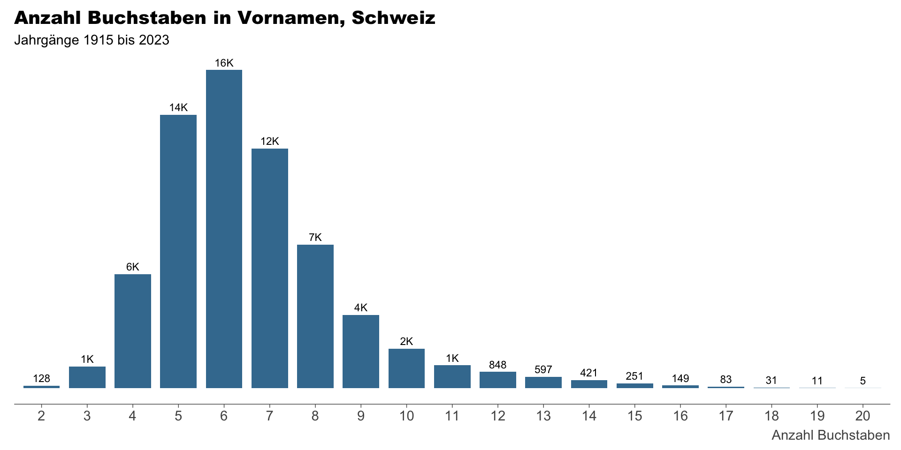

- Die Lernenden können die Funktion
str_detect()aus dem R-Paket stringr verwenden um das Auftreten oder Fehlen bestimmter Muster in Zeichenvektoren (character Vektor) zu ermitteln. - Due Lernenden können
str_detect()mitdplyrFunktionen wiefilter()odermutate()nutzen, um Daten über das Auftreten von Mustern in Teilmengen zu unterteilen oder darauf basierend neue Variablen zu erstellen. - Die Lernenden können das
statRR-Paket nutzen um eine Visualisierung im Corporate Design des Kanton Zürich zu erstellen.
Mit Text Daten arbeiten & KTZH Corporate Design mit statR
rstatsZH - Data Science mit R
Lars Schöbitz
Nov 5, 2026
Lernziele (für diese Woche)
Arbeiten mit Strings in R
- Strings -> Zeichenkette (eine folge von Zeichen)
- Werden verwendet um Textdaten darzustellen
- Können beliebige Länge haben
- Erstellt mit einfachen oder doppelten Anführungszeichen
- Sonderzeichen können mit dem Backslash
\“ausgenommen” werden
Anführungszeichen
- Erstellt mit einfachen oder doppelten Anführungszeichen
Der Backslash \
Um ein einfaches oder doppeltes Anführungszeichen in einer Zeichenkette zu verwenden, kann \, um es “auszunehmen”:
Falls du ein wörtliches Backslash in deiner Zeichenkette verwenden möchtest, musst du es “ausnehmen”: "\\":
Beachte dass die gedruckte Darstellung einer Zeichenkette in der Console nicht identisch mit der Zeichenkette selbst ist:
Vornamen Statistik
Daten: Vornamen der Bevölkerung nach Jahrgang, Schweiz, 2023
- jährlich aktualisierte Daten
- Vornamen mit weniger als 3 Nennungen werden ausgeschlossen
- Datenquelle: Bundesamt für Statistik
Frage: Wieviele einzigartige Vornamen gibt es in der Schweiz?
- 200’000
- 1’000
- 1.0 mio
- 50’000
Datenquelle: Weibliche Vornamen & Männliche Vornamen
Vornamen Statistik
Frage: Wieviele einzigartige Vornamen gibt es in der Schweiz?
Vornamen Statistik
Frage: Wieviele einzigartige Vornamen gibt es in der Schweiz?
Vornamen Statistik
Frage: Was sind die häufigsten 10 Vornamen in der Schweiz?
# A tibble: 10 × 3
vorname geschlecht n
<chr> <chr> <dbl>
1 Maria w 73412
2 Daniel m 63008
3 Peter m 52935
4 Thomas m 52780
5 Hans m 42601
6 Christian m 41618
7 Martin m 40523
8 Anna w 40099
9 Michael m 39961
10 Andreas m 39388Datenquelle: Weibliche Vornamen & Männliche Vornamen
Vornamen Statistik
Frage: Was sind die häufigsten 10 Vornamen in der Schweiz?
| vorname | geschlecht | n |
|---|---|---|
| Maria | w | 73412 |
| Daniel | m | 63008 |
| Peter | m | 52935 |
| Thomas | m | 52780 |
| Hans | m | 42601 |
| Christian | m | 41618 |
| Martin | m | 40523 |
| Anna | w | 40099 |
| Michael | m | 39961 |
| Andreas | m | 39388 |
Datenquelle: Weibliche Vornamen & Männliche Vornamen
Vornamen Statistik
Frage: Was sind die häufigsten 10 Vornamen in der Schweiz?
| vorname | geschlecht | n |
|---|---|---|
| Maria | w | 73412 |
| Daniel | m | 63008 |
| Peter | m | 52935 |
| Thomas | m | 52780 |
| Hans | m | 42601 |
| Christian | m | 41618 |
| Martin | m | 40523 |
| Anna | w | 40099 |
| Michael | m | 39961 |
| Andreas | m | 39388 |
Datenquelle: Weibliche Vornamen & Männliche Vornamen
Vornamen Statistik
Frage: Was sind die häufigsten 10 Vornamen in der Schweiz?
vornamen |>
count(vorname, geschlecht,
wt = wert, sort = TRUE) |>
head(n = 10) |>
# nutze gt R-Package für die Darstellung
gt() |>
tab_style(
style = cell_fill(color = "#AFF0ED"),
locations = cells_body(
columns = everything(),
rows = geschlecht == "m"
)
) |>
tab_style(
style = cell_fill(color = "#FFD700"),
locations = cells_body(
columns = everything(),
rows = geschlecht == "w"
)
)| vorname | geschlecht | n |
|---|---|---|
| Maria | w | 73412 |
| Daniel | m | 63008 |
| Peter | m | 52935 |
| Thomas | m | 52780 |
| Hans | m | 42601 |
| Christian | m | 41618 |
| Martin | m | 40523 |
| Anna | w | 40099 |
| Michael | m | 39961 |
| Andreas | m | 39388 |
Datenquelle: Weibliche Vornamen & Männliche Vornamen
Vornamen Statistik
Frage: Was ist die Verteilung der Vornamenlängen in der Schweiz?
# A tibble: 19 × 2
laenge n
<int> <int>
1 2 128
2 3 1118
3 4 5894
4 5 14119
5 6 16437
6 7 12379
7 8 7420
8 9 3787
9 10 2048
10 11 1185
11 12 848
12 13 597
13 14 421
14 15 251
15 16 149
16 17 83
17 18 31
18 19 11
19 20 5Datenquelle: Weibliche Vornamen & Männliche Vornamen
Vornamen Statistik
Frage: Was ist die Verteilung der Vornamenlängen in der Schweiz?

Datenquelle: Weibliche Vornamen & Männliche Vornamen
Ihr seid dran: Vornamen Statistik
Frage: Welche Fragen könnten wir noch zu den Vornamen in der Schweiz stellen?
- Macht ein paar Notizen.
- Teilt sie im Chat.
stringr: Zeichenkettenmanipulation in R
Hauptmerkmale:
- Teil der tidyverse R-Pakete
- Konsistente Syntax mit str_-Präfix
Funktionen:
str_length(): Stringlänge ermittelnstr_c(): Strings verkettenstr_sub(): Teilstrings extrahieren/ersetzenstr_detect(): Mustererkennungstr_count(): Anzahl Vorkommen eines Musters- …
stringr Dokumentation: https://stringr.tidyverse.org/
Ich bin dran: stringr R-Paket
Zurücklehnen und Fragen stellen!
Pause machen
Bitte steh auf und beweg dich.
Bild erzeugt mit DALL-E 3 by OpenAI
Kanton Zürich - Corporate Design
Vornamen Statistik mit statR R-Paket

Datenquelle: Weibliche Vornamen & Männliche Vornamen
statR R-Paket
- Erstellt Corporate Design Visualisierungen für den Kanton Zürich
- Enthält ein benutzerdefiniertes
ggplot2-Theme - Bietet generische Farbpaletten für Datenvisualisierungen
- Export von Datensätzen als XLSX-Dateien mit Quellinformationen und zusätzlichen Metadaten
- Stellt eine HTML-Berichtsvorlage zur Verfügung
- Offen auf GitHub verfügbar: https://github.com/statistikZH/statR
statR Dokumentation: https://statistikzh.github.io/statR/articles/Visualisierungen.html
Wir sind dran: 02-statR-wir.qmd
- Öffne posit.cloud in deinem Browser (verwende dein Lesezeichen).
- Öffne den rstatszh-k013 Arbeitsbereich (Workspace) für den Kurs.
- Klicke auf Start neben md-08-uebungen.
- Suche im Dateimanager im Fenster unten rechts die Datei
02-statR-wir.qmdund klicke darauf, um sie im Fenster oben links zu öffnen.
Pause machen
Bitte steh auf und beweg dich.
Bild erzeugt mit DALL-E 3 by OpenAI
Ihr seid dran: 03-vornamen-ihr.qmd
- Öffne posit.cloud in deinem Browser (verwende dein Lesezeichen).
- Öffne den rstatszh-k013 Arbeitsbereich (Workspace) für den Kurs.
- Klicke auf Continue neben md-08-uebungen.
- Suche im Dateimanager im Fenster unten rechts die Datei
03-vornamen-ihr.qmdund klicke darauf, um sie im Fenster oben links zu öffnen. - Folge den Anweisungen in der Datei.
Zeitpuffer: Modul 8
Kann ich noch etwas zum heutigen Modul erklären?
Zusatzaufgaben Modul 8
Modul 8 Dokumentation
Zusatzaufgaben Abgabedatum
- Abgabedatum: Mittwoch, 11. November
Danke
Danke!
Folien erstellt mit revealjs und Quarto: https://quarto.org/docs/presentations/revealjs/
Folien als PDF auf GitHub
Alle Materialien sind lizenziert unter Creative Commons Attribution Share Alike 4.0 International.